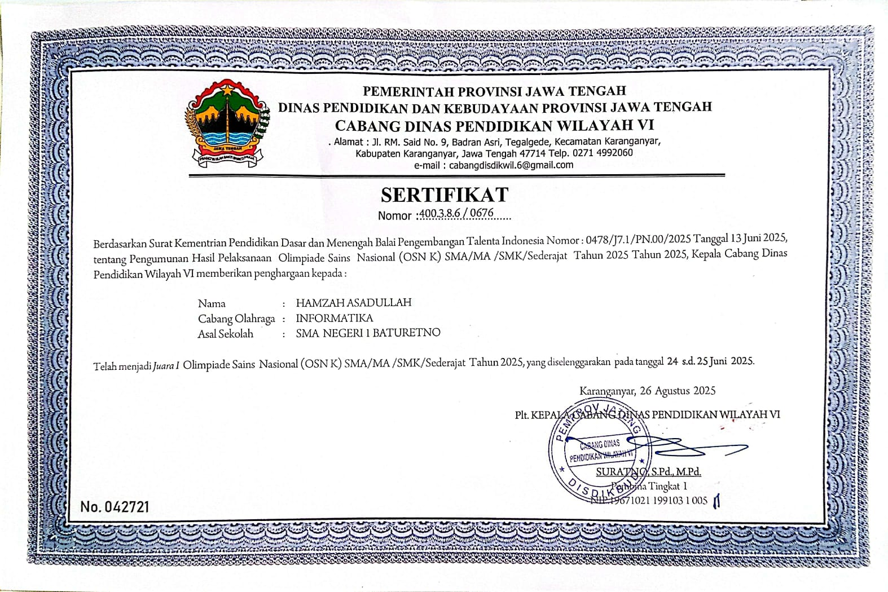
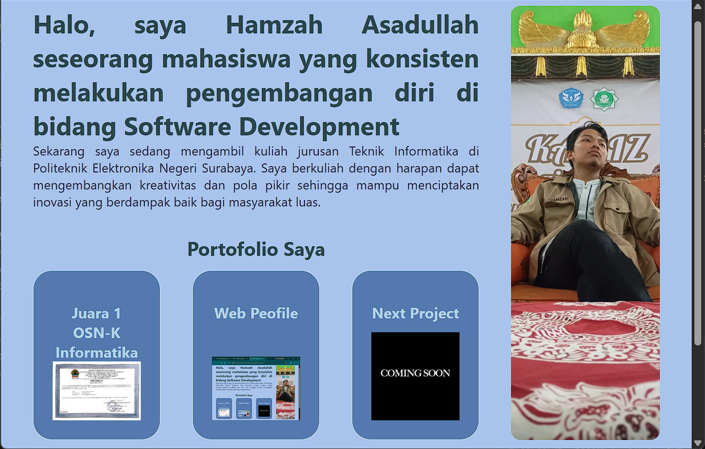

Juara 1 OSN-K Informatika

Sekarang saya sedang mengambil kuliah jurusan Teknik Informatika di Politeknik Elektronika Negeri Surabaya. Saya berkuliah dengan harapan dapat mengembangkan kreativitas dan pola pikir sehingga mampu menciptakan inovasi yang berdampak baik bagi masyarakat luas.


Sebagai pengembang perangkat lunak yang berfokus pada software engineering serta pengembangan Artificial Intelligence dan Machine Learning, saya berdedikasi membangun sistem yang efisien dan solutif. Berbekal fondasi logika yang kuat dari pengalaman di bidang pemrograman kompetitif serta penguasaan C/C++, saya terbiasa merancang algoritma yang presisi untuk memecahkan masalah yang kompleks. Perjalanan saya di dunia teknologi berakar dari ketertarikan pada Olimpiade Sains informatika dan organisasi ilmiah sejak masa sekolah. Saat ini, saya terus memperdalam bidang kecerdasan buatan dan selalu terbuka untuk kolaborasi dalam rekayasa perangkat lunak modern.